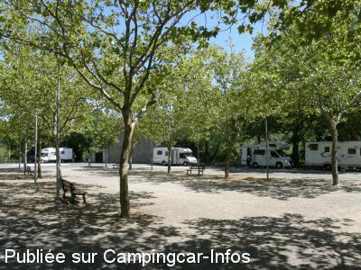
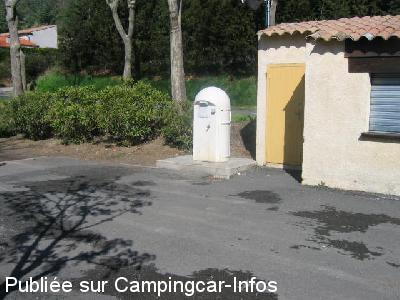
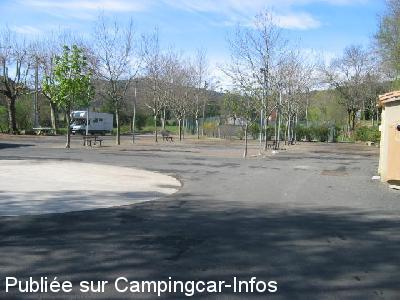

ASN = Aire de services avec stationnement nuit possible de :
FÉLINES TERMENÈS
(N° 454)
Accès/adresse :
Avenue du Termenès D613
11000 FÉLINES TERMENÈS
11000 FÉLINES TERMENÈS
Latitude : (Nord) 42.98718° Décimaux ou 42° 59′ 13′′
Longitude : (Est) 2.61254° Décimaux ou 2° 36′ 45′′
Tarif : Gratuit
Services :


Table de pique-nique
Commerces
Autres informations :
Ouverte toute l'année
3 emplacements
Eau coupée en hiver, vidanges au seau,
K 7 dans WC
Tel mairie : +33(0)468 700 097

Le 26/08/2012 par isatis

Le 22/04/2005 par pyrene65

Le 22/04/2005 par pyrene65
de
Pheclaf
le 14/10/2015 :
De passage fin septembre nous avons apprécié cette aire qui offre des WC, de l'eau et l'électricité gratuite (une seule prise mais en s'arrangeant..)et la tranquillité. Merci à la municipalité.
De passage fin septembre nous avons apprécié cette aire qui offre des WC, de l'eau et l'électricité gratuite (une seule prise mais en s'arrangeant..)et la tranquillité. Merci à la municipalité.
de
Pech R.
le 09/05/2015 :
Nous y sommes passés début mai 2015. La borne ne fonctionne pas. On peut prendre de l'eau dans l'aire de pique nique attenante. Endroit calme et spacieux
Nous y sommes passés début mai 2015. La borne ne fonctionne pas. On peut prendre de l'eau dans l'aire de pique nique attenante. Endroit calme et spacieux
de
sybrub
le 01/05/2013 :
nous nous y sommes arretés pour le 20/04/2013, la borne fonctionnait. Nous avons pu y faire le plein sans problème. Borne gratuite en plus. N'y sommes pas restés pour la nuit, elle se trouvait juste sur notre trajet.
nous nous y sommes arretés pour le 20/04/2013, la borne fonctionnait. Nous avons pu y faire le plein sans problème. Borne gratuite en plus. N'y sommes pas restés pour la nuit, elle se trouvait juste sur notre trajet.
de
isatis
le 26/08/2012 :
Bjr.
La borne ne fonctionne plus, mais il y a une fontaine avec table pique-nique attenante à cet endroit.
les EU avec un seau et EN dans les WC.
La buvette ouvre le soir jusqu'a minuit ou degustations de glaces ou boissons sont proposées dans une ambiance plus que conviviale et à un prix dérisoir.
Endroit propre et très calme. Merci à la commune.
Bjr.
La borne ne fonctionne plus, mais il y a une fontaine avec table pique-nique attenante à cet endroit.
les EU avec un seau et EN dans les WC.
La buvette ouvre le soir jusqu'a minuit ou degustations de glaces ou boissons sont proposées dans une ambiance plus que conviviale et à un prix dérisoir.
Endroit propre et très calme. Merci à la commune.
de
s
le 02/03/2011 :
Arrêt sur cette aire le 21/02 pour la nuit, la fourniture gratuite du 220v était en service mais pas l'eau. Merci pour l'investissement réalisé à notre égard par ce petit village.
Arrêt sur cette aire le 21/02 pour la nuit, la fourniture gratuite du 220v était en service mais pas l'eau. Merci pour l'investissement réalisé à notre égard par ce petit village.
de
domipierre
le 28/08/2008 :
Nous avons passé 2 nuits sur cette aire : un vrai bonheur ! Avec un peu de chance, vous pourrez partager la partie de boules des anciens du village, Jeannot et ses amis, sinon les regarder ce qui est un vrai spectacle ! Une aire et un village à recommander car il y a un point courrier avec un accès Internet
Nous avons passé 2 nuits sur cette aire : un vrai bonheur ! Avec un peu de chance, vous pourrez partager la partie de boules des anciens du village, Jeannot et ses amis, sinon les regarder ce qui est un vrai spectacle ! Une aire et un village à recommander car il y a un point courrier avec un accès Internet